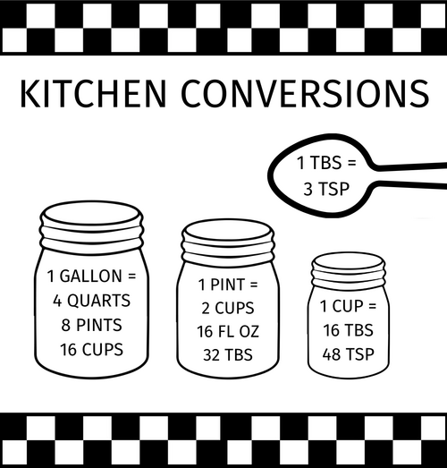
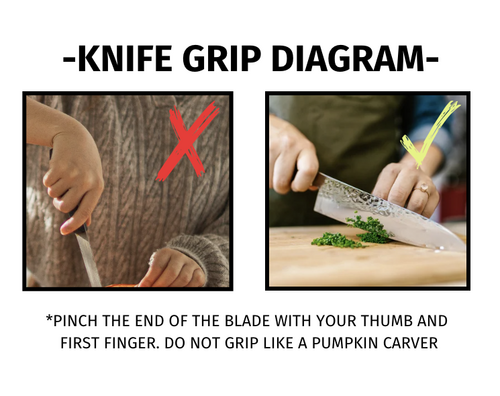

Tools

Conversion Chart
A helpful chart to convert as you cook.

Knife-Grip Diagram
Not everyone was born knowing how to hold a knife. What’s common-sense for Lyle is life-saving information for Ashlyn. We included this diagram of how to safely hold a kitchen knife for all the Ashlyns out there.